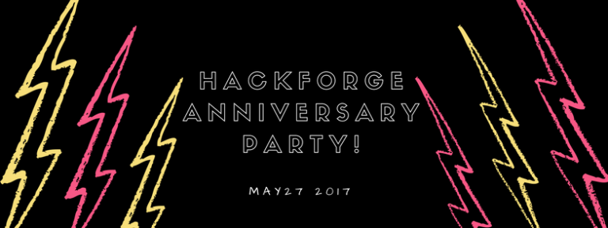

Event Calendar: May 2017
by Sarah Morris in News

.NET Standard & How Typos in Tables Helped Lead to Computers
Tuesday, May 2: 6:30 PM
“.NET Standard” by Derek Comartin
Creating class libraries? Learn about what the .NET Standard is and how it solves the code sharing problem for .NET developers. Ability to share code across all platforms by bringing all the APIs that you expect and love across the environments that you need: desktop applications, mobile apps & games, and cloud services.
“How Typos in Tables Helped Lead to Computers” by John Haldeman
In this talk we’ll put away our computers and learn about how people used to multiply large numbers together. We’ll then explore the problems with those methods and how it drove Charles Babbage, one of the fathers of modern computing, to develop his difference engine and other machines.
Thank you to Microsoft for providing Domino’s Pizza at this event.
Meetup Event
Open Coding Night
Wednesday, May 10: 7:00 – 9:00 PM
Have a project you’re working on? Need to bounce ideas off other programmers? Want to try out a tutorial for new programming language? From beginners to pros, Open Coding Night is designated time for you to hone your craft. Bring your laptop and get coding!
Facebook / Meetup
Board Game Night
Friday, May 12: 7:00 – 10:00 PM
Join us for a night of board games and card games from 7-10PM. If you’re new to board games, we encourage you to come by as we will have trusty Hackforgers there to help get you started. Bring your favourite game (that can be played in less than four hours)!
Facebook / Meetup
Industrial Automation Club
Monday, May 15: 7:00 PM
Windsor’s biggest tech sector has a home at Hackforge! Come out to the inaugural meet of the Industrial Automation club and help set the direction. Whether wrangling PLCs and panels is your day job, or you’re just curious about how we make the machines that make the machines, this is the event for you.
Facebook / Meetup
Repair the World: Games and Community Energy Plan
Tuesday, May 16th: 7:00 PM
At this meeting of Repair the World, we’re going to share what’s we’ve learned about Windsor’s Community Energy Plan. Then we’re going to explore the collective action potential of games. We’re going to talk about past games such as ‘World Without Oil’ and “Future Coast” that invited players to imagine our future and then play with it. We’ll then do our own future-casting as we look at a game from a Hackforge member that’s currently under development.
Facebook / Meetup
Project Management Meetup: PMBOK & Prince II
Wednesday, May 17: 7:00 PM
Join us for a high level talk on PMBOK & PRINCE II, two popular project management methodologies and how they can work for you. We’re pleased to be joined by Elana Freeman, a Senior Project Manager at Thyssenkrupp Materials NA.
This group is for all professionals from any industry, and business owners to come together and exchange ideas and good practices in a fun and relaxed atmosphere.
Facebook / Meetup
3D Printing Club: Intro to 3D Modelling Software
Saturday, May 20: 1:00 – 3:00 PM
Come to Hackforge for a 3D printer showcase and an intro to 3D modelling software. Hackforge members will demonstrate their 3D printers and introduce three popular design programs: OnShape, Fusion 360, and FreeCAD. A great opportunity to learn where to begin in the wide world of 3D printing. We will investigate these kits and design programs further at the next meetup, so go ahead and bring your laptop if you would like to follow along.
Facebook / Meetup
Hackforge Open House
Wednesday, May 24: 7:00 PM
What is Hackforge??
Come learn what Hackforge about Hackforge’s space, events, membership, and community. Drop in to check out our space, see some cool Hackforge projects, and meet our Member Reps.
Facebook / Meetup
Hackforge Anniversary Party
Saturday, May 27: 1:00 PM
Hackforge was dreamt up in 2010 and became a registered non-profit in 2012. Let’s celebrate these milestones together. Details and surprises to come!
Facebook / Meetup
The Great Canadian Game Project May Meetup
Sunday, May 28: 1:00 – 4:00 PM
The game jam is on from February 1 to July 1! Participants have 150 days to conceive and create a game that is proudly Canadian!
Drop by the monthly meetup to discuss your ideas, ask questions, watch tutorials from mentors to help you get started, find existing projects to join, see progress of other developers and more!
More information to be updated at http://canada150game.ca/
Facebook / Meetup
Border City Data: A Gentle introduction to ETL
Monday, May 29th: 7:00 PM
ETL (“Extract, Transform, and Load”) is the commonly used name for the process of cleansing, moving and normalizing data for analysis. Join us for a beginner-friendly introduction to the tasks and tools involved in this process of adding value to data.
Facebook / Meetup
Book Club: Neal Stephenson’s Snow Crash (1992) pt. 2
Tuesday, May 30th: 7:00 PM
“In this dark and sinister age, America only has four things going for it: Movies, Music, Microcode (hacking), and High Speed Pizza Delivery.” We’re finishing Snow Crash! Join us for discussion on the end of this cyberpunk classic.
Facebook / Meetup
June Bookclub Pick: Infomocracy by Malka Ann Older https://www.goodreads.com/book/show/26114433-infomocracy
Software Guild: Zombie Encryption
Wednesday, May 31: 7:00 PM – 9:00 PM
It’s the night of the living dead encryption talks at Hackforge. This session (which was cancelled in March – sorry) is back from the dead and hungry for the brains of fellow developers who need to keep secrets. Join John Haldeman and Randy Topliffe to gain an understanding of HTTPS and get some practical advice on how to encrypt your own websites with Let’s Encrypt. Please note that these talks have nothing to do with Zombies but we hope the clever marketing ploy works.
Facebook / Meetup